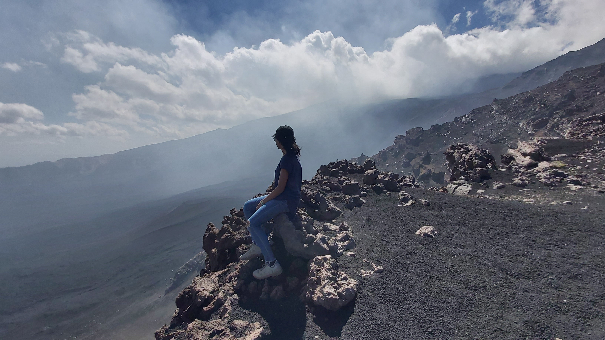

I am a PhD researcher working on geodynamics, numerical modeling, and volcanic processes.
My research focuses on surface deformation and flank instability at Mt. Etna volcano, driven by gravitational, tectonic, and magmatic forces. Using 3D thermo-mechanical models (LaMEM) with realistic topography, fault-related weak zones, and GPS/InSAR constraints, I investigate how magma intrusion and crustal heterogeneity control deformation patterns. My results show that even relatively simple models can reproduce first-order deformation, but explicitly representing dike intrusions is essential to match observed deformation magnitudes during magmatic episodes such as the 2018 fissure eruption.
Bensing, M., Vinciguerra, S., Puglisi, G., & De Siena, L. (2026). Modeling the deformation response to Mt. Etna sliding flank. Journal of Geophysical Research: Solid Earth, 131(3), e2025JB033560. DOI
Email: michelle.bensing@unito.it